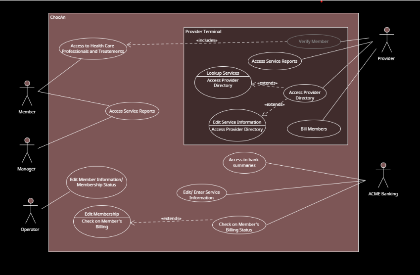

Header Table:
| Student Name |
CWID Number |
Student Email |
Hours Contributed |
| Charstel Walsh |
12223125 |
cewalsh4@crimson.ua.edu |
4 hours |
| Devin Moreno |
12277064 |
dtmoreno1@crimson.ua.edu |
4 hours |
| Evan Hardt |
12307993 |
echardt@crimson.ua.edu |
4 hours |
| Casey Derringer |
12144263 |
cjderringer@crimson.ua.edu |
4 hours |
| Christian Radman |
12268645 |
caradman@crimson.ua.edu |
4 hours |
| Josh Keane |
12205504 |
jkeane@crimson.ua.edu |
4 hours |
Task Distribution Table:
| Student Name |
Tasks Performed |
Percentage Contributed |
| Charstel Walsh |
Use Case Descriptions, contributed to the UML Diagram, and the Short Paragraph. |
16% |
| Devin Moreno |
Use Case Descriptions, contributed to the UML Diagram, and the Glossary. |
17% |
| Evan Hardt |
Created the outline for the Report.html, contributed to the UML Diagram, and Use Case Descriptions. |
17% |
| Casey Derringer |
The Glossary, contributed to the UML Diagram, and Use Case Descriptions. |
17% |
| Christian Radman |
Use Case Descriptions, contributed to the UML Diagram, and the Short Paragraph. |
16% |
| Josh Keane |
The Glossary, contributed to the UML Diagram, and Use Case Descriptions. |
17% |
